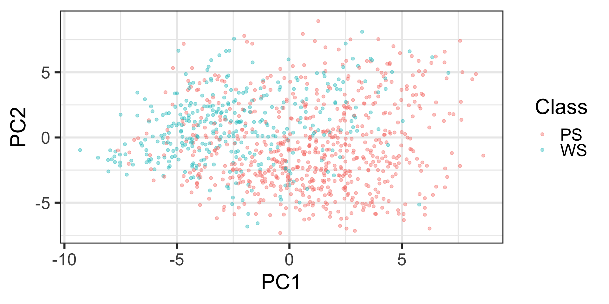
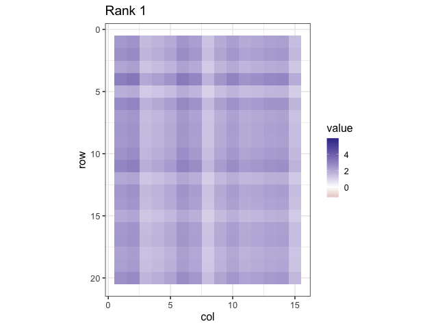

The recipes package
BSMM8740-2-R-2025F [WEEK - 2]
Recap of last lecture
- Last week we introduced the tidyverse verbs used to manipulate (tidy) data
- We also used the tidyverse verbs and
skimrfor exploratory data analysis and to engineer features into our datasets.
Today’s Outline
- We’ll review the R model formula approach to model specification,
- We’ll introduce data pre-processing and design/model matrix generation with the
recipespackage, and - We’ll show how using recipes will facilitate developing feature engineering workflows that can be applied to multiple datasets (e.g. train and test as well as cross-validation1 datasets)
R Model Formulas
Here’s a simple formula used in a linear model to predict house prices (using the dataset Sacramento from the package modeldata):
The purpose of this code chunk:
- subset some of the observations (using the
subsetargument) - create a design matrix for 2 predictor variables (but 3 model terms)
- log transform the outcome variable
- fit a linear regression model
The first two steps create the design-matrix aka model- matrix.
Example
The Sacramento dataset has three categorical variables:
Code
| skim_variable | factor.ordered | factor.n_unique | factor.top_counts |
|---|---|---|---|
| city | FALSE | 37 | SAC: 438, ELK: 114, ROS: 48, CIT: 35 |
| zip | FALSE | 68 | z95: 61, z95: 45, z95: 44, z95: 37 |
| type | FALSE | 3 | Res: 866, Con: 53, Mul: 13 |
Example model matrix
(Intercept) typeMulti_Family typeResidential sqft
1 1 0 1 836
2 1 0 1 1167
3 1 0 1 796
4 1 0 1 852
5 1 0 1 797
6 1 0 0 1122
7 1 0 1 1104
8 1 0 1 1177
9 1 0 0 941
10 1 0 1 1146
11 1 0 1 909
12 1 0 1 1289
13 1 0 1 871
14 1 0 1 1020Summary: Model Formula Method
- Model formulas are very expressive in that they can represent model terms easily
- The formula/terms framework does some elegant functional programming
- Functions can be embedded inline to do fairly complex things (on single variables) and these can be applied to new data sets.
Model formula examples
(Intercept) typeMulti_Family typeResidential sqft I(sqft^2)
1 1 0 1 836 698896
2 1 0 1 1167 1361889
3 1 0 1 796 633616
4 1 0 1 852 725904
5 1 0 1 797 635209
6 1 0 0 1122 1258884contrast with log(price) ~ type + sqft + sqft^2
Summary: Model Formula Method
There are significant limitations to what this framework can do and, in some cases, it can be very inefficient.
This is mostly due to being written well before large scale modeling and machine learning were commonplace.
Limitations of the Current System
- Formulas are not very extensible especially with nested or sequential operations (e.g.
y ~ scale(center(knn_impute(x)))). - When used in modeling functions, you cannot recycle the previous computations.
- For wide data sets with lots of columns, the formula method can be very inefficient and consume a significant proportion of the total execution time.
Limitations of the Current System
- Multivariate outcomes are kludgy by requiring
cbind. - Formulas have a limited set of roles for measurements (just
predictorandoutcome). We’ll look further at roles in the next two slides.
A more in-depth discussion of these issues can be found in this blog post (recommended to read).
Variable Roles
Formulas have been re-implemented in different packages for a variety of different reasons:
> # ?lme4::lmer
> # Subjects need to be in the data but are not part of the model
> lme4::lmer(Reaction ~ Days + (Days | Subject), data = lme4::sleepstudy)
>
> # BradleyTerry2
> # We want to make the outcomes to be a function of a
> # competitor-specific function of reach
> BradleyTerry2::BTm(outcome = 1, player1 = winner, player2 = loser,
+ formula = ~ reach[..] + (1|..),
+ data = boxers)
>
> # modeltools::ModelEnvFormula (using the modeltools package for formulas)
> # mob
> data(PimaIndiansDiabetes, package = 'mlbench')
> modeltools::ModelEnvFormula(diabetes ~ glucose | pregnant + mass + age,
+ data = PimaIndiansDiabetes)Variable Roles
A general list of possible variable roles could be:
- outcomes
- predictors
- stratification
- model performance data (e.g. loan amount to compute expected loss)
- conditioning or faceting variables (e.g.
latticeorggplot2) - random effects or hierarchical model ID variables
- case weights (*)
- offsets (*)
- error terms (limited to
Errorin theaovfunction)(*)
(*) Can be handled in formulas but are hard-coded into functions.
The Recipes package
Recipes
In our housing price analysis we can approach the design matrix and pre-processing steps by first specifying a sequence of steps.
priceis an outcometypeandsqftare predictors- log transform
price - convert
typeto dummy variables
Recipes
A recipe is a specification of intent.
One issue with the formula method is that it couples the specification for your predictors along with the model implementation.
Recipes separate the planning from the doing.
Note
The Recipes website is found at: https://topepo.github.io/recipes
Recipes
recipes workflow
> ## Create an initial recipe with only predictors and outcome
> rec <- recipes::recipe(price ~ type + sqft, data = Sacramento)
>
> rec <- rec %>%
+ recipes::step_log(price) %>%
+ recipes::step_dummy(type)
>
> # estimate any parameters
> rec_trained <- recipes::prep(rec, training = Sacramento, retain = TRUE)
> # apply the computations to new_data
> design_mat <- recipes::bake(rec_trained, new_data = Sacramento)Once created, a recipe can be prepped on training data then baked with any other data.
- the
prepstep calculates and stores variables required by the steps (e.g. (min,max) for scaling), using the training data - the
bakestep applies the steps to new data
Selecting Variables
In our recipe, we can use dplyr-like syntax for selecting variables, e.g. step_dummy(type).
But in some cases, the names of the predictors may not be known at the time when you construct a recipe (or model formula). For example:
- dummy variable columns
- PCA feature extraction when you keep components that capture \(\mathrm{X}\%\) of the variability.
- discretized predictors with dynamic bins
Example
Using the airquality dataset in the datasets package
> dat <- datasets::airquality
>
> dat %>% skimr::skim() %>%
+ dplyr::select(skim_variable:numeric.sd) %>%
+ gt::gt() %>%
+ gtExtras:::gt_theme_espn() %>%
+ gt::tab_options( table.font.size = gt::px(20) ) %>%
+ gt::as_raw_html()| skim_variable | n_missing | complete_rate | numeric.mean | numeric.sd |
|---|---|---|---|---|
| Ozone | 37 | 0.7581699 | 42.129310 | 32.987885 |
| Solar.R | 7 | 0.9542484 | 185.931507 | 90.058422 |
| Wind | 0 | 1.0000000 | 9.957516 | 3.523001 |
| Temp | 0 | 1.0000000 | 77.882353 | 9.465270 |
| Month | 0 | 1.0000000 | 6.993464 | 1.416522 |
| Day | 0 | 1.0000000 | 15.803922 | 8.864520 |
Example: create basic recipe1
> # create recipe
> aq_recipe <- recipes::recipe(Ozone ~ ., data = aq_df_train)
>
> summary(aq_recipe)# A tibble: 6 × 4
variable type role source
<chr> <list> <chr> <chr>
1 Solar.R <chr [2]> predictor original
2 Wind <chr [2]> predictor original
3 Temp <chr [2]> predictor original
4 Month <chr [2]> predictor original
5 Day <chr [2]> predictor original
6 Ozone <chr [2]> outcome originalExample: summary of basic recipe
> # update roles for variables with missing data
> aq_recipe <- aq_recipe %>%
+ recipes::update_role(Ozone, Solar.R, new_role = 'NA_Variable')
>
> summary(aq_recipe)# A tibble: 6 × 4
variable type role source
<chr> <list> <chr> <chr>
1 Solar.R <chr [2]> NA_Variable original
2 Wind <chr [2]> predictor original
3 Temp <chr [2]> predictor original
4 Month <chr [2]> predictor original
5 Day <chr [2]> predictor original
6 Ozone <chr [2]> NA_Variable originalExample: add recipe steps1
> aq_recipe <- aq_recipe %>%
+ # impute Ozone missing values using the mean
+ step_impute_mean(has_role('NA_Variable'), -Solar.R) %>%
+ # impute Solar.R missing values using knn
+ step_impute_knn(contains('.R'), neighbors = 3) %>%
+ # center all variable except the NA_Variable
+ step_center(all_numeric(), -has_role('NA_Variable')) %>%
+ # scale all variable except the NA_Variable
+ step_scale(all_numeric(), -has_role('NA_Variable'))Example: recipe prep and bake
Example: recipe prep values1
The prepped recipe is a data structure that contains any computed values.
# A tibble: 4 × 6
number operation type trained skip id
<int> <chr> <chr> <lgl> <lgl> <chr>
1 1 step impute_mean TRUE FALSE impute_mean_c4BqM
2 2 step impute_knn TRUE FALSE impute_knn_1eh9Z
3 3 step center TRUE FALSE center_AajAt
4 4 step scale TRUE FALSE scale_1dCWy Example: recipe prep values
We can examine any computed values by using the step number as an argument to recipes::tidy.
Example: change roles again
Here we update the original recipe to set the required roles.
Recommended Baseline Steps
Baseline preprocessing methods can be categorized as:
- dummy: Do qualitative predictors require a numeric encoding (e.g., via dummy variables or other methods)?
- zv: Should columns with a single unique value be removed?
- impute: If some predictors are missing, should they be estimated via imputation?
- decorrelate: If there are correlated predictors, should this correlation be mitigated? This might mean filtering out predictors, using principal component analysis, or a model-based technique (e.g., regularization).
- normalize: Should predictors be centered and scaled?
- transform: Is it helpful to transform predictors to be more symmetric?
See recommended preprocessing for recipe steps.
Available Steps
- Basic: logs, roots, polynomials, logits, hyperbolics
- Encodings: dummy variables, “other” factor level collapsing, discretization
- Date Features: Encodings for day/doy/month etc, holiday indicators
- Filters: correlation, near-zero variables, linear dependencies
- Imputation: K-nearest neighbors, bagged trees, mean/mode imputation
Available Steps
- Normalization/Transformations: center, scale, range, Box-Cox, Yeo-Johnson
- Dimension Reduction: PCA, kernel PCA, ICA, Isomap, data depth features, class distances
- Others: spline basis functions, interactions, spatial sign
More on the way (i.e. autoencoders, more imputation methods, etc.)
One of the package vignettes shows how to write your own step functions.
Extending
Need to add more pre-processing or other operations?
If an initial step is computationally expensive, you don’t have to redo those operations to add more.
Extending
Recipes can also be created with different roles manually (note: no formula)
Also, the sequential nature of steps means that steps don’t have to be R operations and could call other compute engines (e.g. Weka, scikit-learn, Tensorflow, etc. )
Extending
We can create wrappers to work with recipes too:
An Example
Kuhn and Johnson (2013) analyze a data set where thousands of cells are determined to be well-segmented (WS) or poorly segmented (PS) based on 58 image features. We would like to make predictions of the segmentation quality based on these features.
Note
The dataset segmentationData is in the package caret and represents the results of automated microscopy to collect images of cultured cells. The images are subjected to segmentation algorithms to identify cellular structures and quantitate their morphology, for hundreds to millions of individual cells. A column named Case identifies Train and Test observations.
An Example
The segmentationData dataset has 61 columns
A Simple Recipe
Code
> rec <- recipes::recipe(Class ~ ., data = seg_train)
>
> basic <- rec %>%
+ # the column Cell contains identifiers
+ recipes::update_role(Cell, new_role = 'ID') %>%
+ # Correct some predictors for skewness
+ recipes::step_YeoJohnson(recipes::all_predictors()) %>%
+ # Standardize the values
+ recipes::step_center(recipes::all_predictors()) %>%
+ recipes::step_scale(recipes::all_predictors())
>
> # Estimate the transformation and standardization parameters
> basic <-
+ recipes::prep(
+ basic
+ , training = seg_train
+ , verbose = FALSE
+ , retain = TRUE
+ ) Note
The Yeo-Johnson is similar to the Box-Cox method, however it allows for the transformation of nonpositive data as well. A Box Cox transformation is a transformation of non-normal dependent variables into a normal shape. Both transformations have a single parameter \(\lambda\).
A Simple Recipe
We can examine the center, scale, and Yeo Johnson parameters computed for each continuous measurement.
# A tibble: 8 × 3
terms value id
<chr> <dbl> <chr>
1 AngleCh1 0.806 YeoJohnson_t8fWg
2 AreaCh1 -0.861 YeoJohnson_t8fWg
3 AvgIntenCh1 -0.340 YeoJohnson_t8fWg
4 AvgIntenCh2 0.434 YeoJohnson_t8fWg
5 AvgIntenCh3 0.219 YeoJohnson_t8fWg
6 AvgIntenCh4 0.213 YeoJohnson_t8fWg
7 DiffIntenDensityCh1 -0.929 YeoJohnson_t8fWg
8 DiffIntenDensityCh3 0.116 YeoJohnson_t8fWg# A tibble: 8 × 3
terms value id
<chr> <dbl> <chr>
1 AngleCh1 45.0 center_SAQcQ
2 AreaCh1 1.15 center_SAQcQ
3 AvgIntenCh1 2.24 center_SAQcQ
4 AvgIntenCh2 17.4 center_SAQcQ
5 AvgIntenCh3 6.99 center_SAQcQ
6 AvgIntenCh4 7.56 center_SAQcQ
7 ConvexHullAreaRatioCh1 1.21 center_SAQcQ
8 ConvexHullPerimRatioCh1 0.893 center_SAQcQ# A tibble: 8 × 3
terms value id
<chr> <dbl> <chr>
1 AngleCh1 21.1 scale_XkwCt
2 AreaCh1 0.00334 scale_XkwCt
3 AvgIntenCh1 0.204 scale_XkwCt
4 AvgIntenCh2 9.42 scale_XkwCt
5 AvgIntenCh3 2.50 scale_XkwCt
6 AvgIntenCh4 3.04 scale_XkwCt
7 ConvexHullAreaRatioCh1 0.210 scale_XkwCt
8 ConvexHullPerimRatioCh1 0.0777 scale_XkwCtMore sophisticated steps: PCA
Principal Component Analysis (PCA) is a technique used in data analysis to simplify a large dataset (many measurements/columns) by reducing its number of dimensions (columns) while still retaining as much important information as possible.
A pretty good description of PCA can be found here.
More sophisticated steps: PCA
PCA step-by-step:
- Standardize the Data:
- Before applying PCA, we often standardize the data, which means adjusting all variables to have the same scale. This is important because PCA is sensitive to the scale of the data.
- Find the Principal Components:
- PCA identifies the directions (principal components) in which the data varies the most. Think of these as new axes in a new coordinate system that best capture the variation in the data.
- The first principal component captures the most variation. The second principal component is orthogonal (at a right angle) to the first and captures the next most variation, and so on.
- Transform the Data:
- We then transform the original data into this new set of principal components. Each data point can now be represented in terms of these principal components rather than the original variables.
More sophisticated steps: PCA
You have test scores in Math, Science, and English. You want to find a way to understand overall performance without looking at all three subjects separately.
Original Data: You have three scores for each student: Math, Science, and English.
Standardize the Data: You adjust the scores so that Math, Science, and English scores are on the same scale.
Find Principal Components:
- PCA finds that the first principal component might be a combination of Math and Science scores, capturing the overall academic ability in quantitative subjects.
- The second principal component might represent the difference between scores in English and the average of Math and Science scores, capturing a different aspect of performance.
Transform the Data:
- Each student’s performance can now be described using these new principal components instead of the original scores. For example, a student might have a high score on the first principal component (strong in Math and Science) but a lower score on the second (relatively weaker in English).
More sophisticated steps: PCA
Benefits of PCA
- Simplification: Reduces the number of variables, making it easier to analyze and visualize the data.
- Noise Reduction: Helps to remove noise from the data by focusing on the main components that capture the most variation.
- Feature Extraction: Identifies the most important variables (principal components) that explain the majority of the variance in the data.
PCA is like finding the most important “directions” in your data, where most of the interesting stuff happens. It helps you see the big picture by reducing complexity while keeping the essential information. This makes it a powerful tool for data analysis, especially when dealing with high-dimensional datasets.
Principal Component Analysis
# A tibble: 60 × 4
variable type role source
<chr> <list> <chr> <chr>
1 Cell <chr [2]> ID original
2 AngleCh1 <chr [2]> predictor original
3 AreaCh1 <chr [2]> predictor original
4 AvgIntenCh1 <chr [2]> predictor original
5 AvgIntenCh2 <chr [2]> predictor original
6 AvgIntenCh3 <chr [2]> predictor original
7 AvgIntenCh4 <chr [2]> predictor original
8 ConvexHullAreaRatioCh1 <chr [2]> predictor original
9 ConvexHullPerimRatioCh1 <chr [2]> predictor original
10 DiffIntenDensityCh1 <chr [2]> predictor original
# ℹ 50 more rowsPrincipal Component Analysis
# A tibble: 7 × 4
variable type role source
<chr> <list> <chr> <chr>
1 Cell <chr [2]> ID original
2 Class <chr [3]> outcome original
3 PC1 <chr [2]> predictor derived
4 PC2 <chr [2]> predictor derived
5 PC3 <chr [2]> predictor derived
6 PC4 <chr [2]> predictor derived
7 PC5 <chr [2]> predictor derived # A tibble: 3,364 × 4
terms value component id
<chr> <dbl> <chr> <chr>
1 AngleCh1 0.00521 PC1 pca_dySEj
2 AreaCh1 0.0823 PC1 pca_dySEj
3 AvgIntenCh1 -0.204 PC1 pca_dySEj
4 AvgIntenCh2 -0.209 PC1 pca_dySEj
5 AvgIntenCh3 -0.0873 PC1 pca_dySEj
6 AvgIntenCh4 -0.203 PC1 pca_dySEj
7 ConvexHullAreaRatioCh1 0.191 PC1 pca_dySEj
8 ConvexHullPerimRatioCh1 -0.181 PC1 pca_dySEj
9 DiffIntenDensityCh1 -0.185 PC1 pca_dySEj
10 DiffIntenDensityCh3 -0.0760 PC1 pca_dySEj
# ℹ 3,354 more rowsPrincipal Component Analysis
# A tibble: 8 × 7
Cell Class PC1 PC2 PC3 PC4 PC5
<int> <fct> <dbl> <dbl> <dbl> <dbl> <dbl>
1 207827637 PS 4.86 -5.85 -0.891 -4.13 1.84
2 207932455 PS 3.28 -1.51 0.353 -2.24 0.441
3 207827656 WS -7.03 -1.77 -2.42 -0.652 3.22
4 207827659 WS -6.96 -2.08 -2.89 -1.79 3.20
5 207827661 PS 6.52 -3.77 -0.924 -2.61 2.49
6 207932479 WS 2.87 1.66 1.75 -5.41 0.324
7 207932480 WS 2.72 0.433 -1.05 -5.45 1.18
8 207827711 WS -3.01 1.94 2.68 -0.409 3.55 Principal Component Analysis

Business Problem with PCA
- Firms collect large customer by product purchase data
- Data is high dimensional and noisy
- We want simpler views to see patterns and predict behavior

SVD as Compression
- SVD factors the matrix \(M = U\Sigma V^\top\)
- \(U,V\) have orthogonal columns, and \(\Sigma\) is a diagonal matrix of singular values
- Keep the top k singular values for a rank \(k\) summary
- Interpretation:
- \(U\Sigma\) gives customer preferences in reduced dimensions
- \(V\) gives product features in reduced dimensions
Low Rank Approximation

Low Rank Approximations

plot of cumulative variance explained
> var_expl <- sv$d^2 / sum(sv$d^2)
> tibble::tibble(k = 1:length(var_expl), share = cumsum(var_expl)) |>
+ ggplot(aes(k, share)) +
+ geom_line() + geom_point() +
+ scale_y_continuous(labels = scales::percent) +
+ labs(title = "Cumulative Variance Explained", x = "Rank k", y = "Variance") +
+ theme_bw(base_size = 24)
PCA in Practice


Recap
- We’ve used the
recipespackage to create a workflow for data pre-processing and feature engineering - The
recipeverbs define the pre-processing and feature engineering steps - using the recipe object, the verb
prepprepares the data on a training set, storing the meta-parameters. - the verb
bakeapplies the prepped recipe to new data, using the meta-parameters.
Recap
- When first created, the recipe object contains the the steps defined for pre-processing
- Once the recipe has been prepped, usually on training data, it contains the calculations required to perform pre-processing of data in the context of the training set, e.g. mean and stdev of normalized columns, PCA components, etc. ( the meta-parameters).
- the prepped recipe is used to preprocess datasets in context of the training data. E.g. to normalize a column in the test data we subtract the corresponding training set mean and divide by the corresponding training set stdev.